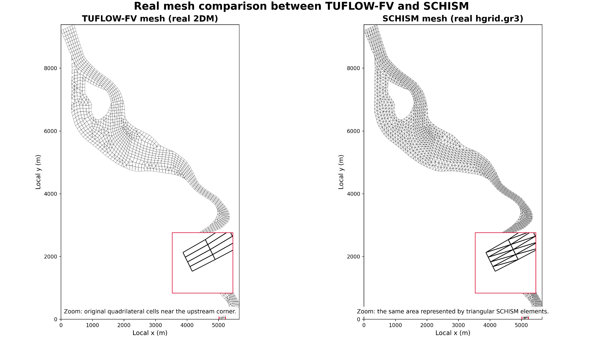
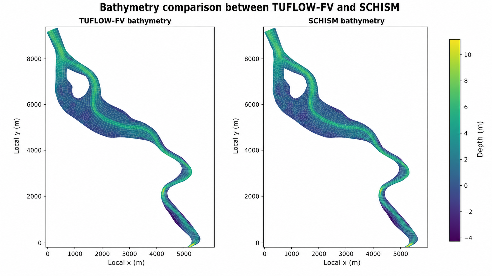

Equivalent physical boundaries, model-specific file formats
The TUFLOW-FV and SCHISM-AED models use different numerical grids and different boundary-file syntax, so the files cannot be literally identical. The objective was instead to make the physical boundary locations, discharge, water level and constituent forcing equivalent. The key correction was to replace the former SCHISM river element source with an explicit cross-section open-boundary discharge.
Boundary formulation aligned
1. Why the SCHISM river boundary was changed
| Feature | TUFLOW-FV reference | Earlier SCHISM-AED setup | Revised SCHISM-AED setup |
|---|---|---|---|
| River location | Lower/southern end of the domain | Lower/southern end | Lower/southern end |
| River representation | Discharge distributed across the river boundary cross-section | 20 m³/s injected into element 1, with nodes 3–1–2 | 20 m³/s prescribed across a five-node river open boundary |
| Ocean location | Upper/northern end of the domain | Seven-node open boundary | Same seven-node open boundary retained |
| Initial water level | 0.052 m | 0.052 m in elev.ic | Unchanged: already matched |
River open boundary
The lower/southern boundary section was defined using the following five SCHISM node IDs:
For this selected boundary-node order, the prescribed SCHISM flux is written as −20 m³/s, corresponding to a physical inflow of 20 m³/s into the domain.
Ocean open boundary
The existing upper/northern ocean boundary was retained with these seven node IDs:
Ocean water level, temperature, salinity and the 17 AED boundary series continue to be applied at this boundary.
Boundary-equivalence workflow
- Confirmed that the river and ocean ends were not reversed: the river is at the lower/southern end and the ocean/tidal boundary is at the upper/northern end in both models.
- Converted the five-node lower/southern river section into a second SCHISM open boundary in both
hgrid.gr3andhgrid.ll. - Retained the original seven-node ocean open boundary.
- Updated
bctides.inso the river is driven as a prescribed normal-flux boundary and the ocean remains the water-level and constituent boundary. - Applied the same physical river discharge used by TUFLOW-FV: 20 m³/s for the comparison period.
- Disabled the former element-source representation so the river inflow is not counted twice.
- Reused the audited river temperature, salinity and 17 AED constituent values at the revised river boundary.
2. Files changed or checked
| File or file group | Role in the alignment |
|---|---|
hgrid.gr3, hgrid.ll | Changed the boundary-node definitions from one open boundary to two: a five-node river boundary and the retained seven-node ocean boundary. |
bctides.in | Added the river prescribed-flux boundary definition and retained the ocean elevation, temperature, salinity and AED boundary configuration. |
| River flux time series | Used a constant physical inflow of 20 m³/s; for the selected SCHISM boundary orientation this is stored with a negative sign. |
source_sink.in, vsource.th, msource.th | The old local element-source route was removed or disabled for the revised case to prevent double counting. Its audited constituent values were transferred to the river-boundary forcing. |
elev.th, TEM_1.th, SAL_1.th, AED_1.th–AED_17.th | The existing ocean/tidal forcing series were retained. |
elev.ic | Confirmed at 0.052 m, matching the TUFLOW-FV initial water level. |
The earlier audit found 744 hourly records for the common forcing period and confirmed that the river discharge and the audited temperature, salinity and 17 AED values were numerically consistent between the supplied model inputs.
3. Real horizontal mesh comparison
The two models use the same Spoon Estuary geometry and the same 1,419 horizontal vertices/nodes, but they do not use the same element topology. The TUFLOW-FV 2DM contains 1,375 reported two-dimensional cells, dominated by quadrilateral cells, whereas the SCHISM hgrid.gr3 contains 2,535 triangular elements. The zoomed view shows the same local area represented by rectangles/quadrilaterals in TUFLOW-FV and by triangular subdivisions in SCHISM.

hgrid.gr3 mesh. Click the figure to open the full-resolution image.4. Bathymetry comparison
The bathymetry fields are plotted on a common colour scale. The channel, shallow margins, deeper upstream basin and downstream bends have the same spatial depth pattern. The small visual differences in cell texture are caused by quadrilateral versus triangular rendering rather than a different bathymetric dataset.

5. Alignment checks
| Aspect | Alignment conclusion |
|---|---|
| Boundary geometry | The river is now represented as a cross-section open boundary in SCHISM rather than a local element source. |
| Hydraulic forcing | The physical discharge is the same as TUFLOW-FV; the negative SCHISM file value reflects only the selected boundary orientation/sign convention. |
| Water-quality forcing | The audited temperature, salinity and 17 AED values are retained for the equivalent boundary forcing. |
| Mesh geometry | The domain and vertex locations are shared. |
| Mesh topology | Not identical: TUFLOW-FV uses quadrilateral cells while SCHISM uses triangles. |
| Bathymetry | Equivalent nodal bathymetry; rendering differences arise from topology. |
Conclusion
The principal structural boundary difference has been removed. SCHISM-AED now applies the Spoon Estuary river input across the same physical boundary section and with the same 20 m³/s inflow represented in TUFLOW-FV. The models still differ in numerical topology and solver formulation, so future comparisons should be described as equivalent boundary and forcing configurations, not identical numerical models.